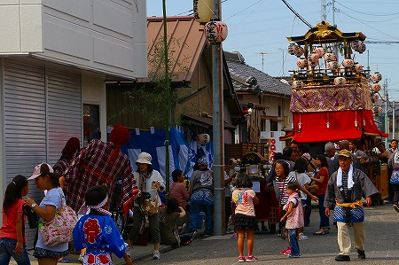
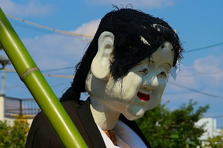

猩々とは何か？
それは
真っ赤な顔をして身体は獣、お酒が大好きな異形の神で、
オランウータンがその起源とされている。
元々、中国経由で伝聞された珍獣だったがいつの間にか福の神に昇格していた不思議な存在なのだ。
常日頃から赤ら顔で酒ばっかりくらってる小生にとって
とても他人様とは思えない、どっちかというと
ブラザー感ありまくりの存在である。
そんな猩々が名古屋市南区、緑区辺りの祭りに多数出没するらしい。
これは
酒好きメイトとして是非とも挨拶せねばなるまい。
てなわけで行ってきました秋の名古屋。
最初に訪れたのは南区の
星宮社。
石垣で囲われた立派な神社だが、周囲はいたって普通の住宅街。
この日は
本地祭りという祭礼が開かれていた。
屋台が並び華やいだ雰囲気。
そんな神社前にいらっしゃいました
猩々サマ。
スマトラやボルネオを主な生息域にしているオランウータンだが、
激緩な伝言ゲームの末、日本に伝播してきた時点ではこんな姿になっちゃいました。
カミサマというよりはミッキー吉野か中井精也といったな感じ。まあ、どっちもその道のカミサマだから間違いはないのかな。
誰ですか？キモいとか言ってる人は？
ふ☆く☆ぶ☆く☆し☆い、と言い換えなさい！
まあ、笑顔なのに目は笑ってませんねえ…。
猩々サマは人々が飲み食いしているエリアのベンチに置かれている。
まるで
猩々を酒の肴に飲んでいるような雰囲気だった。
御相伴にあずかりたいのは山々だが、いかんせんこの日は車で移動していたのでここは我慢。我慢。
周辺をウロウロしていると賑やかなお囃子が聞こえてきた。
山車である。
この山車は大量の提灯を竹竿のようなものでせり出しているので、遠目に見ても異様な迫力がある。
さらに山車の上には謎の人形が鎮座しているぞ…。
他の町内の神酒所の近くで第二猩々サマ発見。
こちらは誰に見られるでもなく、長いすにポツンと座っていた。
先ほど星宮社の前に座っていた猩々によく似ている。双子といってもいいだろう。
この後知る事になるが、
赤毛で三つ編みのロングヘアーは多くの猩々に共通していた。
ここの祭りでは猩々はこうして飾られているだけのようだ。
身体が竹篭で出来ているので当然かつては中に人がパイルダーオンして闊歩していたのだろうが、今は名誉執行委員のごとく祭りを見守っていた。
同じく本地祭り西田町。
大動脈の国道一号線から一本入るとローカルな雰囲気にあふれていた。
西田町には3体の猩々サマが並んでいた。
大型1体、中型2体。
髪の毛が長いのも手伝って何処となく中性的な印象が。
つか真っ黒に日焼けしたソフトボール部の女子中学生みたいな感じ。

山車が来ると子供たちが猩々サマを少しだけ動かしたりしていたが、ここも基本的には飾っているだけ。
近くに居た年配の方に聞いたら昔は中に人が入って練り歩いたそうだが、しばらくやっていないとのことであった。
山車を見送る3体の猩々サマは心なしか寂しそうだった。
こうなったらアクティブな猩々サマを見たくなってきたぞ。
というわけで、次に向かったのは緑区の有松。絞り染めと古い町並みで有名な町だ。
ここのメインはからくり山車。
3台並んだ山車にセッティングされた人形が動くのだ。
実演タイムには数多くの人が詰め掛けてそのオールドスクールかつテクニカルなギミックを楽しんでいた。
からくり山車も気になるが、こちらは猩々サマの追っかけをしなきゃいけないのだ！
なんせ酒ブラザーですから。
有松の駅近くに居ると突然赤い巨体が道を横切った！
おおお、見逃すまい！
…と追いかけていると、さらに別の巨人の姿がっ！
猩々サマである。
先ほどの星宮社の祭礼で見た猩々もそうであったが、胴体が竹で出来ており、胸元の部分が薄い布で覆われている。
人間が中にはいると丁度猩々の胸元に顔が納まるようになっているため、中の人は胸元の薄い布越しに外界を見ることになるのだ。
片手に棕櫚の葉のような扇を持ち、子供を見つけてはぺちぺちと叩いている。
やはり歩いている姿は異様で迫力があるなあ。
もちろんチビッ子はギャン泣きだが、小学生も高学年あたりになると抵抗してみたり猩々サマをからかってみたり。
昔は猩々サマも手加減ナシでバンバン叩いていたようだが、今はホレ、そういうの厳しい時代だから。
幼児に至っては何が起こってるかよく判らないみたいで…。
さらに猩々サマの後ろから先ほど見かけた巨像が登場。
こちらは天狗サマであった。

紅葉型の団扇を持ち、練り歩いている。
先ほどのちび子もさすがに赤い巨人が2体現れたので若干ビビッている様子。
こうしてひとしきり子供たちを脅かした（？）後、猩々と天狗は詰め所に帰っていたのである。
子供をペチペチするのは無病息災を願ってのことだという。
こちらは南区の元鳴尾町の若宮八幡宮の祭礼。
ここでは猩々でなく白い顔の巨人が行列の先頭を歩いていた。
おかめ、なのだという。

以前は猩々の人形もあったのだというが、今ではこのおかめ一体だけが残されたのだとか。
胸から上の部分をかさ上げしている格好なので全身と足のバランスが違っていて面白い。ホラ、膝下が異様に短いでしょ。
足元ジャージだし。
さらに祭の行列から離れると寂しさ倍増。
名古屋市博物館で行われた
「大人形への祈り」展の図録によると、このおかめとは
アメノウズメノミコトの事なのだという。
さらに
猩々は猿田彦の化身なのだとか。
そうか。単なる南洋の珍獣だった猩々が神に転じたのはその姿を猿田彦に重ねたからなのか。
うむー。深いぞ、猩々をはじめとした大人形の世界。
てなわけで名古屋の猩々ウオッチング、後半戦に突入します
猩々2に続く